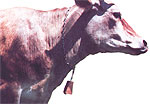

The cardboard model beside the finished cowbell. After scribing the copper, score the metal along these lines (being careful not to cut through the copper as you do so) with a hammer and a cold chisel. Then bend the metal along the scored lines with pliers.